| Solution Pane(View) | 시작 다음 이전 |
프로젝트가 오픈되면 프로젝트에 포함된 시나리오 파일을 트리로 표시 하며 파일의 확장자는 표시 하지 않습니다. 시나리오를 오픈하면 시나리오 항목 하위에 시나리오가 포함하고 있는 컴포넌트 아이템이 표시 됩니다.
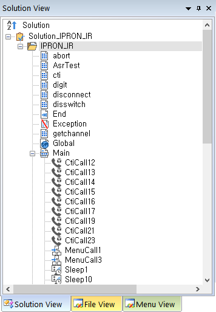 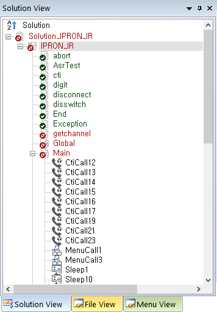
[일반 상태] [형상관리상태]
Solution : 솔루션, 프로젝트, 시나리오 파일과 포함된 아이템을 표시 합니다. Description : 솔루션, 프로젝트, 시나리오 파일의 설명을 표시 합니다.
기본 사항
· 트리의 파일을 더블클릭하면 편집 화면에 시나리오가 열리며, 파일 하위에 아이템 리스트가 보여 집니다. · 트리에서 파일의 하위에 있는 아이템을 더블클릭하면 편집 화면에 시나리오가 열리고 해당 아이템으로 이동 합니다.
솔루션은 프로젝트 리스트를 관리 합니다. 트리의 루트에서 마우스 오른 버튼을 누르면 메뉴가 팝업 됩니다.
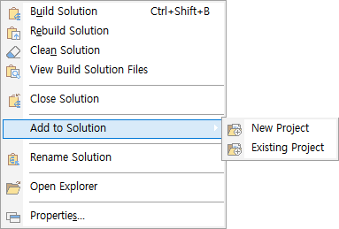
· Build Solution : 솔루션 빌드
· Rebuild Solution : 솔루션 다시 빌드
· Clean Solution : 솔루션 정리
· View Build Solution Files : 솔루션 빌드 후 빌드된 프로젝트 파일 모두 보기
· Close Solution : 솔루션 닫기
· Add to Solution - New Project : 새 프로젝트 생성하여 솔루션에 추가
· Add to Solution - Existing Project : 프로젝트를 솔루션에 추가
· Rename Solution : 솔루션 이름 변경
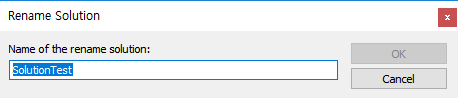
· Open Explorer : 솔루션 파일(.sssx)이 있는 폴더를 윈도우 탐색기로 열기
· Properties... : 솔루션 파일의 속성
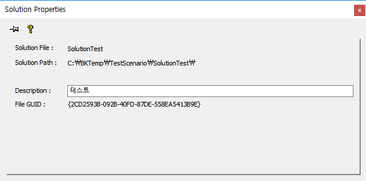 Description 을 수정 후 엔터를 입력하면 변경 됩니다
프로젝트는 시나리오 파일 리스트를 관리 합니다. 트리의 루트에서 마우스 오른 버튼을 누르면 메뉴가 팝업 됩니다.
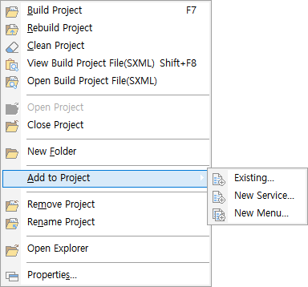
· Build Project : 프로젝트 빌드
· Rebuild Project : 프로젝트 다시 빌드
· Clean Project : 프로젝트 정리
· View Build Project File(SXML) : 빌드된 SXML 파일 보기 (기본 Notepad), Options > Debug/Ment 탭에서 툴 지정
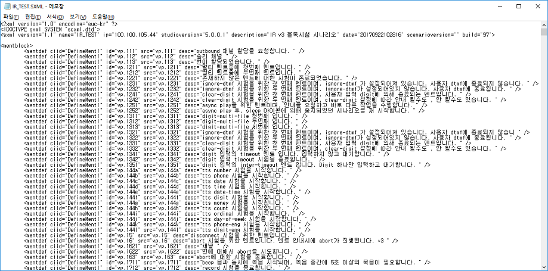
· Open Build Project File : 빌드된 SXML 파일이 있는 폴더를 윈도우 탐색기로 열기
· Open Project : 프로젝트 열기
· Close Project : 프로젝트 닫기
· New Folder : 폴더 생성
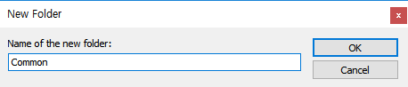
· Add to Project - Existing... : 시나리오를 프로젝트에 추가
· Add to Project - New Service... : 서비스 시나리오를 생성하여 프로젝트에 추가
· Add to Project - New Menu... : 메뉴 시나리오를 생성하여 프로젝트에 추가
· Remove Project : 프로젝트를 솔루션에서 제거
· Rename Project : 프로젝트 빌드
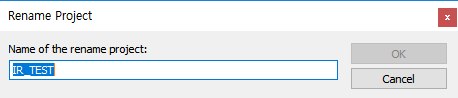
· Open Explorer : 프로젝트 파일(.sspx)이 있는 폴더를 윈도우 탐색기로 열기
· Properties... : 프로젝트 파일의 속성
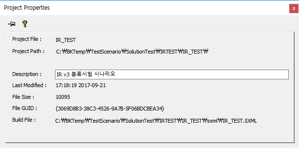 Description 을 수정 후 엔터를 입력하면 변경 됩니다
트리의 파일에서 마우스 오른 버튼을 누르면 메뉴가 팝업 됩니다.
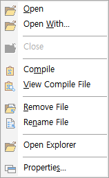
· Open : 시나리오 파일을 오픈
· Open With : 시나리오 파일을 다른 툴로 오픈
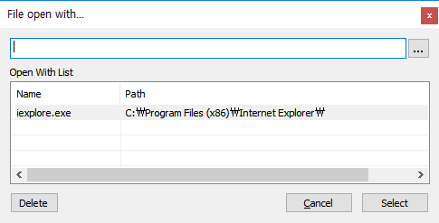 버튼을 눌러서 툴을 선택 합니다. 선택한 툴이 정상적으로 시나리오 파일을 오픈하면 Open With List에 등록되어 다음에 툴을 선택할 수 있습니다.(리스트에서 더블클릭 또는 Select 버튼)
· Close : 시나리오 파일 닫기
· Compile : 시나리오 파일 컴파일
· View Compile File : 컴파일한 시나리오 파일(.fxml, .mxml) 보기(기본 Notepad), Options > Debug/Ment 탭에서 툴 지정
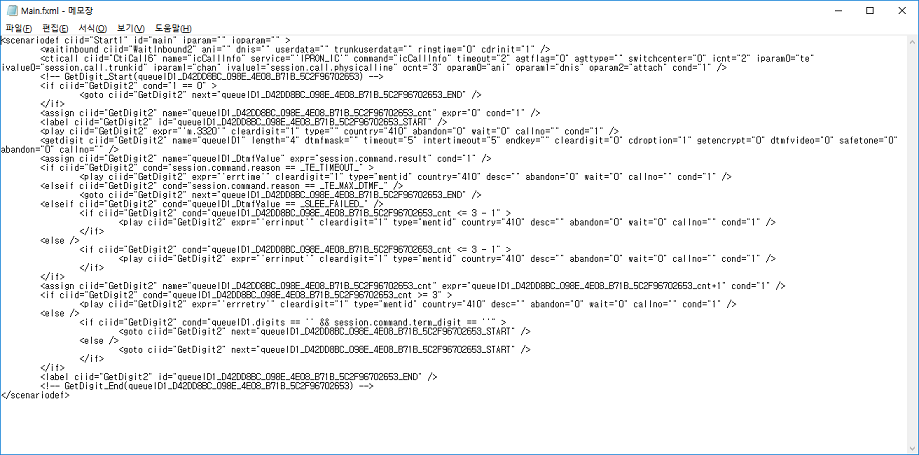 · Remove File : 시나리오 파일을 프로젝트에서 제거
· Rename File : 시나리오 파일 이름 변경
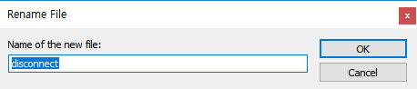
· Open Explorer : 시나리오 파일(.ssfx, .msfx)이 있는 폴더를 윈도우 탐색기로 열기
· Properties : 시나리오 파일 속성
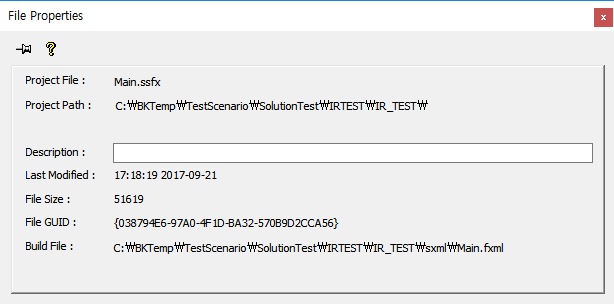 Description 을 수정 후 엔터를 입력하면 변경 됩니다
트리에서 시나리오 파일의 하위의 아이템에서 마우스 오른 버튼을 누르면 메뉴가 팝업 됩니다.
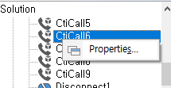
· Properties : 아이템 속성, 편집 창의 해당 아이템으로 이동하며 아이템 속성창이 팝업
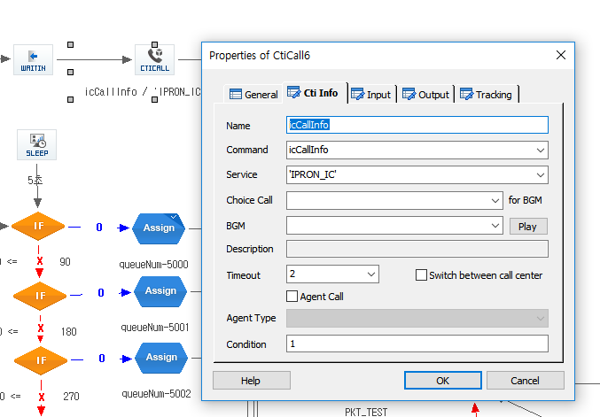
트리의 폴더에서 마우스 오른 버튼을 누르면 메뉴가 팝업 됩니다.
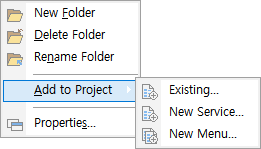
· New Folder : 폴더하위에 폴더 생성
· Delete Folder : 폴더 삭제
· Rename Folder : 폴더 이름 변경
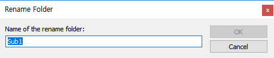 · Add to Project - Existing : 시나리오를 프로젝트에 추가하는데 트리에서는 현재 폴더의 하위에 추가
· Add to Project - New Service : 서비스 시나리오를 생성하여 프로젝트에 추가하는데 트리에서는 현재 폴더의 하위에 추가
· Add to Project - New Menu : 메뉴 시나리오를 생성하여 프로젝트에 추가하는데 트리에서는 현재 폴더의 하위에 추가
· Properties : 폴더 속성
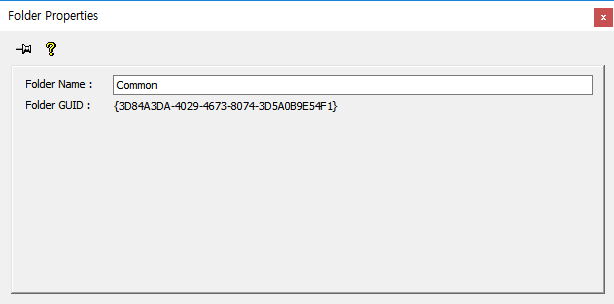
트리 리스트의 컬럼 헤더를(Solution Views는 Solution 컬럼) 마우스 왼 클릭을 하면 오름 차순 내림차순 정렬이 토글 되면서 정렬 됩니다.
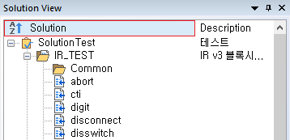 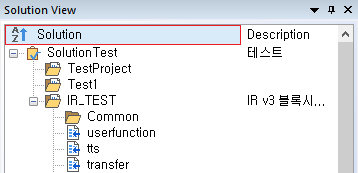
트리 리스트의 컬럼 헤더에서 마우스 오른 버튼을 누르면 메뉴가 팝업 됩니다.
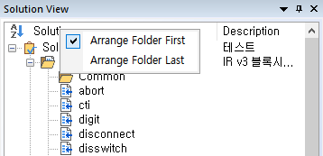
· Arrange Folder First : 정렬 시 폴더가 가장 먼저(위에) 오도록 설정 합니다.
· Arrange Folder Last : 정렬 시 폴더가 가장 나중에(아래에) 오도록 설정 합니다.
Notes:
· Workspace Tree의 모든 Properties창은(아이템 속성 창 제외) 창이 아닌 다른 곳을 클릭하면 닫힙니다. 또는, 창 오른쪽 상단의 버튼을 누르면 됩니다. 단, 화면에서 Pin버튼이 눌린 상태면() 버튼 으로만 닫을 수 있습니다.
|
| Copyrights(C) Bridgetec.co.kr. All Rights Reserved | 시작 다음 이전 |